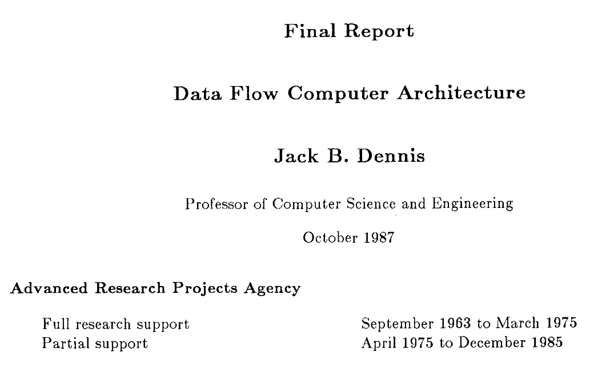

Towards Maintainable and Explainable AI Systems with Dataflow
Motivation
- ML deployment challenges
Venture Beat, 2019
“Why do 87% of data science projects never make it into production?”
InfoWorld, 2021
“85% of AI and machine learning projects fail to deliver, and only 53% of projects make it from prototypes to production.”
Capital One and Forrester, 2022
“73% of respondents find transparency, traceability, and explainability of data flows challenging.”
Motivation
- ML deployment challenges
- Incident handling
Question 1
What are the challenges associated with deploying ML, and which parts of the deployment process are affected?
Objectives: survey deployment case studies, "lessons learned", ML application reviews
Question 1
What are the challenges associated with deploying ML, and which parts of the deployment process are affected?
Results: practitioners face issues at each stage of the ML deployment process
Question 2
Are there software architectures that can address or mitigate the ML deployment challenges?
Objectives:
- Analyse principles of Data Oriented Architecture (DOA)
- Survey implicit adoption of DOA
Question 2
Are there software architectures that can address or mitigate the ML deployment challenges?
Results:
- Identified high-level principles of DOA (data as a first class citizen, openness, decentralisation)
- Mapped previously identified challenges to DOA principles
- A few systems fully adopt the DOA, most adopt partially
- Identified dataflow architecture as a fitting paradigm

Question 2, cont.
Objectives: evaluate dataflow architecture in ML deployment context with small-scale and production-level applications
Results:
- Created Seldon Core v2, DOA system for ML inference based on dataflow and streaming
- Demonstrated relation of DOA to data provenance
- Measured provenance/performance trade-off
Question 3
How can software architectures aid developers' ability to apply causal reasoning to system components?
Objectives: formulate connection between dataflow graphs and causal inference, demonstrate its benefits

Question 3
How can software architectures aid developers' ability to apply causal reasoning to system components?
Results:
- Formulated an approach to treat dataflow systems as graphical causal models
- Demonstrated utility of this approach for fault localisation
Outlook
- Statistical emulation of systems
- End-to-end system optimisation
- Self-adaptive and continual learning systems
- System FITness
- Security and privacy
Appendix
Scaling Big Data Mining Infrastructure: The Twitter Experience J Lin, D Ryaboy; ACM SIGKDD Explorations Newsletter, 2013
“Effective big data mining at scale doesn't begin or end with what academics would consider data mining”
“Data scientists expend a large amount of effort to understand the data available to them, before they even begin any meaningful analysis”
“Exploratory data analysis always reveals data quality issues”
Scaling Big Data Mining Infrastructure: The Twitter Experience J Lin, D Ryaboy; ACM SIGKDD Explorations Newsletter, 2013
“Twitter is powered by many loosely-coordinated services.”
“Since a single user action may involve many services, a data scientist wishing to analyze user behavior must first identify all the disparate data sources involved.”
“Services are normally developed and operated by different teams, which may adopt different conventions for storing and organizing log data.”
The Data Dichotomy: Rethinking the Way We Treat Data and Services B Stopford, Confluent, 2016
“A dichotomy: Data systems are about exposing data. Services are about hiding it.”
“The underlying issue is that data and services don't sing too sweetly together.”
“We need to consider [data] a first class citizen of the architectures we build.”